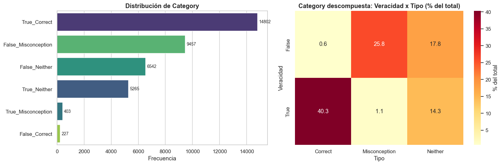
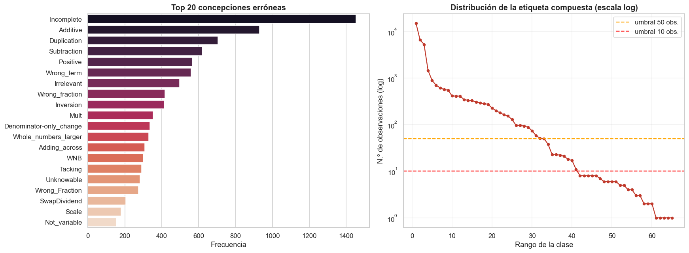
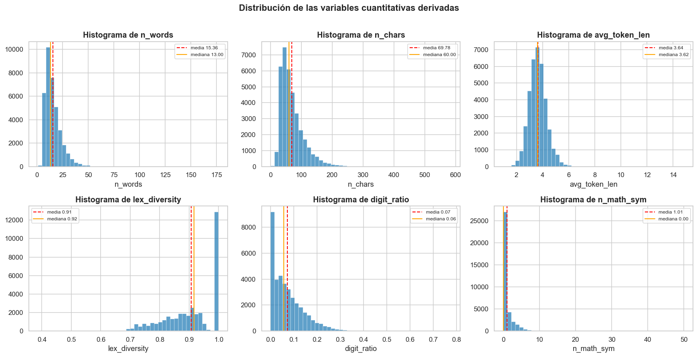
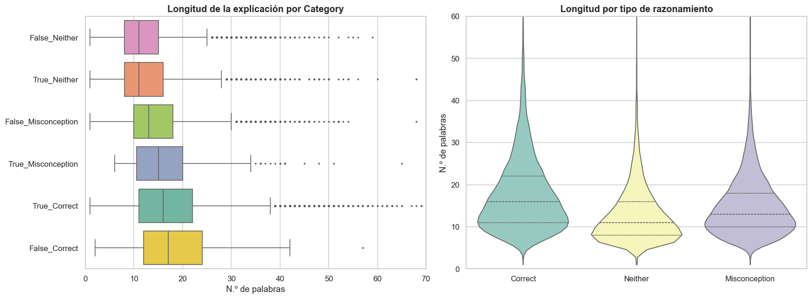
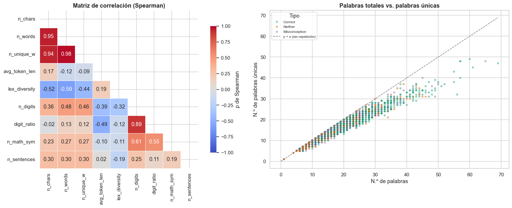
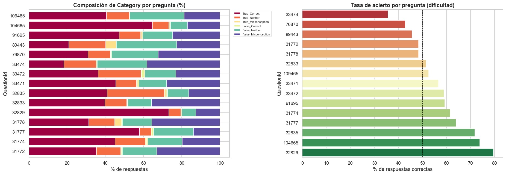
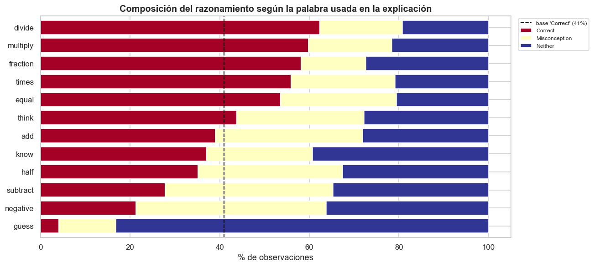

Señal observable
Opción seleccionada y explicación escrita con vocabulario, símbolos y pasos informales.
Exploración de razonamientos matemáticos abiertos para reconocer respuestas correctas, errores y concepciones erróneas mediante Procesamiento del Lenguaje Natural.
Las respuestas abiertas revelan cómo piensa el estudiante, pero revisarlas manualmente a escala exige tiempo y conocimiento pedagógico.
Opción seleccionada y explicación escrita con vocabulario, símbolos y pasos informales.
La concepción matemática que originó el error puede aparecer aun cuando la respuesta sea correcta.
NLP puede priorizar patrones probables para apoyar retroalimentación docente, no reemplazarla.
Rittle-Johnson et al. (2025); The Learning Agency (2025).
explicaciones en el benchmark completo
preguntas de matemática
respuestas sintéticas añadidas
κ de Cohen reportada entre evaluadores
Respuestas reales de la plataforma Eedi, complementadas con ejemplos sintéticos y revisadas mediante rúbricas construidas por especialistas.
Parte de los errores ortográficos y del cambio a minúsculas fue inyectada artificialmente. El ruido textual no debe interpretarse por completo como conducta natural.
Rittle-Johnson et al. (2025), Detecting Math Misconceptions: An AI Benchmark Dataset.
La salida combina la categoría del razonamiento con una concepción errónea específica cuando corresponde.
King et al. (2025), Kaggle: MAP — Charting Student Math Misunderstandings.
observaciones
preguntas únicas
opciones distintas
concepciones / etiquetas compuestas
| Identificador | Contexto | Respuesta | Texto | Etiquetas |
|---|---|---|---|---|
| row_id | QuestionId | MC_Answer | StudentExplanation | Category Misconception |
Fuente: resultados reproducidos en 01_analisis_exploratorio.ipynb.

corresponde a True_Correct.
Cálculos y figura almacenados en el notebook del proyecto.
No equivalen automáticamente a mala calidad: muchas categorías no requieren una concepción errónea.
Negaciones, operadores, fracciones, porcentajes, números y expresiones como “times” o “divide”.
Espacios, variantes tipográficas y campos de etiqueta, manteniendo intacta la semántica matemática.

Pocas etiquetas concentran muchos ejemplos; numerosas concepciones son raras.


Los diagramas de caja muestran dispersión y valores extremos en todas las categorías.


Pregunta, opción y lenguaje están entrelazados.

QuestionId + MC_Answer + StudentExplanation.
Category y, solo si aplica, Misconception.
MAP@3, macro-F1 y análisis por pregunta/etiqueta.
Salton & Buckley (1988); Devlin et al. (2019); He et al. (2021); Shen et al. (2021).
Category debe preceder a Misconception.
La pregunta no es un identificador neutral.
Evaluar más allá de accuracy.
Preservar notación, números y negaciones.
El modelo apoya la revisión docente.
Baseline TF-IDF y validación dual.
Escanee para abrir el repositorio
Devlin, J., Chang, M.-W., Lee, K., & Toutanova, K. (2019). BERT: Pre-training of deep bidirectional transformers for language understanding. NAACL-HLT 2019, 4171–4186. https://doi.org/10.18653/v1/N19-1423
He, P., Liu, X., Gao, J., & Chen, W. (2021). DeBERTa: Decoding-enhanced BERT with disentangled attention. ICLR 2021.
King, J., Smith, K., Burleigh, L., Crossley, S., Demkin, M., & Reade, W. (2025). MAP—Charting student math misunderstandings. Kaggle.
Otero, V., Rodrigues, A., Saporta, J., Musco, C., & Musco, C. (2025). A benchmark for math misconceptions. Discover Education, 4, 277. https://doi.org/10.1007/s44217-025-00742-w
Rittle-Johnson, B., Adler, R., Durkin, K., Burleigh, L., King, J., & Crossley, S. (2025). Detecting math misconceptions: An AI benchmark dataset. AIME-Con WIP, 20–24.
Salton, G., & Buckley, C. (1988). Term-weighting approaches in automatic text retrieval. Information Processing & Management, 24(5), 513–523.
Shen, J. T., Yamashita, M., Prihar, E., Heffernan, N., Wu, X., Graff, B., & Lee, D. (2021). MathBERT [Preprint]. arXiv. https://doi.org/10.48550/arXiv.2106.07340
The Learning Agency. (2025, November 12). Case study: Math misconceptions competition.
La bibliografía completa y los enlaces activos se encuentran en el informe PDF.
El análisis exploratorio transforma explicaciones abiertas en hipótesis verificables para un sistema de apoyo pedagógico responsable.